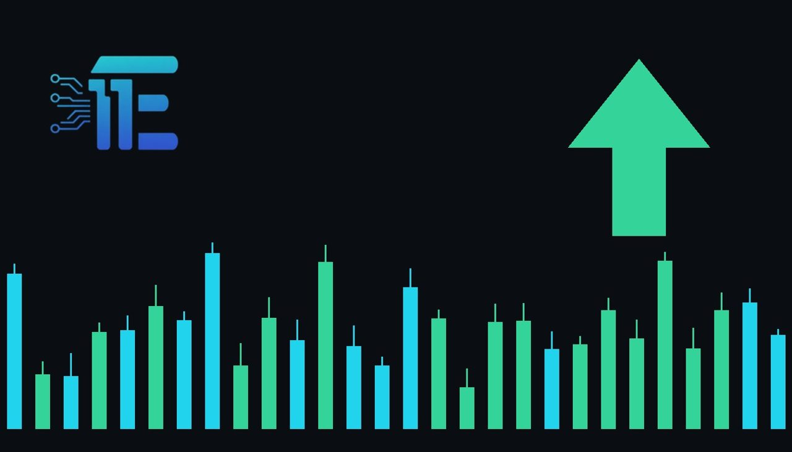

Trump Rejects Iran Deal as War Concerns Stir MarketsTrump ថាគ្មានការចាំបាច់ធ្វើកិច្ចព្រមព្រៀងជាមួយ Iran ឡើយ ខណៈជម្លោះបង្កការប្រែប្រួលលើប្រេង
XAU/USD impact: ▲ Bullishផលប៉ះពាល់លើ XAU/USD: ▲ ឡើង

President Donald Trump stated that no deal with Iran is needed, noting control over the strait as conflict worries persist. Heightened geopolitical risks typically bolster safe-haven demand for gold while impacting energy markets.
ប្រធានាធិបតី Donald Trump បានលើកឡើងថា ពុំត្រូវការកិច្ចព្រមព្រៀងជាមួយ Iran នោះទេ ដោយបញ្ជាក់ពីការគ្រប់គ្រងលើច្រកសមុទ្រ និងបង្កក្តីបារម្ភពីសង្គ្រាមអូសបន្លាយ។ ភាពមិនច្បាស់លាស់ផ្នែកភូមិសាស្ត្រនយោបាយជាទូទៅជំរុញតម្រូវការទ្រព្យសុវត្ថិភាពលើមាស ខណៈដែលទីផ្សារទំនិញប្រឈមនឹងការប្រែប្រួល។
Crude oil prices exhibited mixed trading on Thursday following statements from President Donald Trump, who indicated that no diplomatic deal with Iran is currently needed. Trump stated that the United States has control over the strategic strait, remarks that reignited worries among investors that an end to the ongoing war between the United States and Iran is not in sight.
តម្លៃប្រេងឆៅបានបង្ហាញការជួញដូរចម្រុះកាលពីថ្ងៃព្រហស្បតិ៍ បន្ទាប់ពីការលើកឡើងរបស់ប្រធានាធិបតី Donald Trump ដែលបានបង្ហាញថា បច្ចុប្បន្នគ្មានការចាំបាច់ក្នុងការធ្វើកិច្ចព្រមព្រៀងការទូតជាមួយ Iran នោះឡើយ។ លោក Trump បានថ្លែងថាសហរដ្ឋអាមេរិកគ្រប់គ្រងលើច្រកសមុទ្រយុទ្ធសាស្ត្រ ដែលការលើកឡើងនេះបានបង្កឱ្យមានការព្រួយបារម្ភជាថ្មីក្នុងចំណោមអ្នកវិនិយោគថា ទីបញ្ចប់នៃសង្គ្រាមរវាងសហរដ្ឋអាមេរិក និង Iran នៅមិនទាន់អាចមើលឃើញនៅឡើយទេ។
The transmission channel from geopolitical confrontation to gold (XAU/USD) operates primarily through safe-haven demand and market risk sentiment. As geopolitical friction intensifies in critical energy regions, traditional market dynamics often see capital rotate away from higher-risk assets into physical bullion. Gold historically acts as a reliable defensive asset when international crises escalate and diplomatic negotiations stall.
យន្តការបញ្ជូនផលប៉ះពាល់ពីជម្លោះភូមិសាស្ត្រនយោបាយមកលើមាស (XAU/USD) ដំណើរការជាចម្បងតាមរយៈតម្រូវការទ្រព្យសុវត្ថិភាព និងមនោសញ្ចេតនាហានិភ័យទីផ្សារ។ នៅពេលដែលភាពតានតឹងផ្នែកភូមិសាស្ត្រនយោបាយកើនឡើងនៅក្នុងតំបន់ថាមពលសំខាន់ៗ ទីផ្សារជាទូទៅតែងតែឃើញលំហូរមូលធនងាកចេញពីទ្រព្យសកម្មដែលមានហានិភ័យខ្ពស់ ឆ្ពោះទៅរកមាស។ តាមប្រវត្តិសាស្ត្រ មាសដើរតួជាទ្រព្យសកម្មការពារដ៏រឹងមាំ នៅពេលដែលវិបត្តិអន្តរជាតិកើនឡើង ហើយកិច្ចចរចាការទូតមិនមានភាពរីកចម្រើន។
Simultaneously, the impact on energy markets creates a dual-channel effect for gold traders. While geopolitical turmoil directly encourages safe-haven accumulation, swings in crude oil prices can influence broader economic inflation outlooks. Changes in commodity prices often alter sovereign bond yield trajectories and currency valuations, which directly affect precious metal demand across global trading sessions.
ជាមួយគ្នានេះ ផលប៉ះពាល់លើទីផ្សារថាមពលបានបង្កើតផលជះពីរផ្លូវសម្រាប់អ្នកជួញដូរមាស។ ខណៈពេលដែលអស្ថិរភាពភូមិសាស្ត្រនយោបាយជំរុញដោយផ្ទាល់ដល់ការទិញមាសទុកជាទ្រព្យសុវត្ថិភាព ការប្រែប្រួលនៃតម្លៃប្រេងឆៅក៏អាចជះឥទ្ធិពលដល់ទស្សនវិស័យអតិផរណាសេដ្ឋកិច្ចទូទៅផងដែរ។ ការផ្លាស់ប្តូរតម្លៃទំនិញច្រើនតែជះឥទ្ធិពលលើទិន្នផលសញ្ញាបណ្ណរដ្ឋាភិបាល និងតម្លៃរូបិយប័ណ្ណ ដែលប៉ះពាល់ផ្ទាល់ដល់តម្រូវការលោហៈធាតុមានតម្លៃនៅទូទាំងទីផ្សារសកល។
Looking at potential scenarios, if prolonged conflict and rhetoric surrounding the strait continue to disrupt regional stability, sustained safe-haven demand would typically provide strong underlying support for gold. On the other hand, should energy price pressures lead to heightened expectations of tighter central bank policy, a firmer US dollar could emerge to cap bullion gains and place downward pressure on XAU/USD.
ក្រឡេកមើលសេណារីយ៉ូដែលអាចកើតមាន ប្រសិនបើសង្គ្រាមអូសបន្លាយ និងការលើកឡើងជុំវិញច្រកសមុទ្របន្តរំខានដល់ស្ថិរភាពក្នុងតំបន់ នោះតម្រូវការទ្រព្យសុវត្ថិភាពដែលបន្តកើតមានជាទូទៅនឹងផ្តល់ការគាំទ្រយ៉ាងរឹងមាំដល់តម្លៃមាស។ ផ្ទុយទៅវិញ ប្រសិនបើសម្ពាធតម្លៃថាមពលនាំឱ្យមានការរំពឹងទុកខ្ពស់អំពីគោលនយោបាយរូបិយវត្ថុកាន់តែតឹងរ៉ឹងពីធនាគារកណ្តាល នោះដុល្លារអាមេរិកអាចនឹងឡើងថ្លៃ ដែលនឹងដាក់សម្ពាធធ្លាក់ចុះមកលើ XAU/USD។
Moving forward, market participants and gold traders should observe subsequent statements regarding the U.S.-Iran confrontation, security conditions across vital maritime channels, and reactions in energy markets. Shifts in crude benchmarks and broader investor risk appetite will offer important clues regarding whether safe-haven demand will dominate the gold market.
សម្រាប់ជំហានបន្ទាប់ អ្នកចូលរួមទីផ្សារ និងអ្នកជួញដូរមាសគួរតែតាមដានយ៉ាងដិតដល់នូវការថ្លែងការណ៍បន្តបន្ទាប់ទាក់ទងនឹងជម្លោះរវាងសហរដ្ឋអាមេរិក និង Iran ស្ថានភាពសន្តិសុខនៅតាមច្រកផ្លូវទឹកពាណិជ្ជកម្មសំខាន់ៗ និងប្រតិកម្មនៅក្នុងទីផ្សារថាមពល។ ការប្រែប្រួលនៃតម្លៃប្រេងឆៅ និងចំណង់ហានិភ័យរបស់អ្នកវិនិយោគទូទៅ នឹងផ្តល់សញ្ញាសំខាន់ៗថាតើតម្រូវការទ្រព្យសុវត្ថិភាពនឹងបន្តគ្រប់គ្រងទីផ្សារមាសដែរឬទេ។
Key takeawaysចំណុចសំខាន់ៗ
- President Trump stated no Iran deal is needed, raising market fears that the U.S.-Iran conflict will not end soon.
- លោកប្រធានាធិបតី Trump បានថ្លែងថាពុំត្រូវការកិច្ចព្រមព្រៀងជាមួយ Iran ឡើយ ដែលបង្កើនការព្រួយបារម្ភថាសង្គ្រាមរវាងសហរដ្ឋអាមេរិក និង Iran នឹងមិនបញ្ចប់ឆាប់ៗនោះទេ។
- Lingering geopolitical risks and maritime concerns in the strait typically elevate safe-haven demand for gold.
- ហានិភ័យភូមិសាស្ត្រនយោបាយដែលនៅតែបន្ត និងការព្រួយបារម្ភលើច្រកសមុទ្រ ជាទូទៅជំរុញតម្រូវការទិញមាសទុកជាទ្រព្យសុវត្ថិភាព។
- Traders should watch ongoing conflict developments, energy market volatility, and the resulting impact on the US dollar.
- អ្នកជួញដូរគួរតាមដានការវិវត្តនៃជម្លោះ ការប្រែប្រួលទីផ្សារថាមពល និងផលប៉ះពាល់ជាលទ្ធផលមកលើដុល្លារអាមេរិក។
Original commentary by THE MARKET CODE, based on public reporting from Finance. Written with the help of AI. Educational only, not financial advice.
មតិវិភាគដើមដោយ THE MARKET CODE ផ្អែកលើការរាយការណ៍សាធារណៈពី Finance។ សរសេរដោយមានជំនួយពី AI។ មាតិកាអប់រំប៉ុណ្ណោះ មិនមែនជាដំបូន្មានហិរញ្ញវត្ថុទេ។